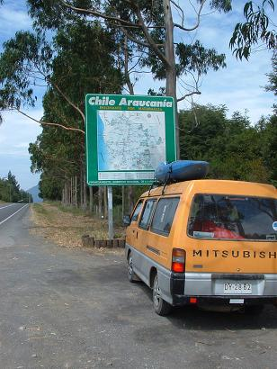

La indecisión es la llave a la
flexibilidad
|
|
||
|
La indecisión es la llave a la
flexibilidad |
|
|
|
********************************************************************************************* Newer news can be found on scotlandnews |
| Humberstone, Chile, May 1, 2005. | ********************************************************************************************* Humberstone is a deserted nitrate mining town about 45 km outside Iquique. Prior to the 1930s, northern Chile was one of the greatest resources of natural nitrate for fertiliser. Many of the Chile/Bolivia/Peru wars were fought over vast desert with nothing but nitrate. To summarise these wars, lets just say that Bolivia used to be a lot bigger and it had a coastline. Humberstone flourished until the 1930s when the German chemist Haber came up a process of sythesising nitrate cheaply. The company-run town and mine struggled on until 1961. This is what it looks like now. Great spot if you're thinking of making a western movie.
It seems to have been the ideal company town, with a theatre, hotel, markets, and even a swimming pool made from the steel plates of a salvaged ship.
Here we are in the theatre...
Obligatory steam train picture...
All in all a very tiring day in the sun. Time for a siesta...
|
| On the road again, May 3, 2005, Chile to Peru. | ********************************************************************************************* Back on the road again, once more taking the bus like members of the general public, the team heads to Peru. As you might recall, we came through all 2,000 km of Peru on a multi-day bus journey in February. This is the promised return, and the people of Peru came out in crowds of up to two people to see our triumphant return. Initially we are heading to Arequipa as a jumping-off point for the Colca Canyon. A jumping-off point for the Colca Canyon, not a jumping-off point into the Colca Canyon - this is an important distinction. The Colca Canyon used to be regarded as the deepest canyon in the world, except recently it has been discovered that the Cotahuasi Canyon, just up the road, is 163 m deeper. So the Colca Canyon isn't even the deepest canyon in this little part of Peru. In terms of embarrassing demotions, this ranks up there with David Trimble's UUP showing in the Northern Ireland election. |
| Emotional Reunion, Iquique, Chile, May 29, 2005. | ********************************************************************************************* Team South travelled out of Argentina, across the Andes, and down to the Chilean coast to achieve a long-awaited reunion with Team North. Team North, for its part, travelled from the couch to answer the door. In the ensuing days, Ferg was in the hospital getting the pins taken out of his wrist. 'Pins' is perhaps a misleading word, these things were more like regular nails, the kind you fire out of a Hilti gun at a passing cat, but he is recovering well. There was some last minute attempts to get the van back on the road, but the cost was prohibitive, so the Mitsubishi is now being stripped for parts. Here's an emotional goodbye.
To pass the time awaiting for Ferg's final medical checkout and the attempted van fixing the team resorted to some extreme indoor airbowling.
|
| Doubtful future, April onwards, 2005. | ********************************************************************************************* The death of the van, Ferg's sporting incapacity, and Simon's upcoming but not imminent departure, effectively mean the end of the kayaking and paragliding parts of the entire trip. Given the recent series of calamities, it doesn't seem feasible or worthwhile to try for more kayaking in Bolivia or Peru. Compared with previous countries visited, Bolivia would be more an expedition-style kayaking trip. Without the financial resources to fix the van, on a shortened timescale, and with a smaller crew, the decision was taken to hang up our helmets. Team North coming out of its desert lair and Team South racing north into the sun are on course for an emotional reunion soon, somewhere in northern Chile, northern Argentina, or southern Bolivia. Again, all in line with the trip motto. |
| �Feliz Cumplea�os! (Happy Birthday) Catherine, April 21, 2005. | ********************************************************************************************* The team celebrates another birthday on the road. Scotland '04+1 seems to be on a birthday-cake-in-random-hostels trip at the moment. Here's Catherine celebrating her birthday with a trip to the childhood home of Che Guevara in Cordoba. Hasta La Birthday Cake, Siempre!
|
| Music in the park, Buenos Aires, April 15, 2005. | ********************************************************************************************* Contrary to what you may have thought, Bleeding Gums Murphy is alive and well and playing that lonesome sax-a-ma-phone in San Telmo, Buenos Aires.
|
| Further disasters befall Team North in the desert, April 2005. | ********************************************************************************************* Ferg has pins in his wrist, Mr. Fred has stitches in his knee and is gone home. What else can go wrong? Well, the van could expire, which is exactly what it did. According to Team North's Engineering and Vehicle Maintenance Division, the van had been 'very sketchy' since Arica and had to go to the mechanics on an 'ongoing basis.' In the middle of the desert, however, it died. When pressed for precise details, the spokesman said that 'the engine is seized, the rupture discs on the coolant system on the engine block have ruptured, and the dilithium crystals are buggered = new engine required.' This far into Scotland '04+1's financial year, it is not deemed salvagable and the van is being left in Iquique to fester. With no recent pictures of the van at hand, here's a file photo with which to remember it.  |
| Last flying session, April, 2005. | ********************************************************************************************* Team North flew like a bird, prior to flying like a piano. Here are some photos of some good flying days...
We think Simon is enjoying himself...
Seeking spiritual guidance in these testing times, Simon seems to have gone to India...
In the end it all became too much for the boys to bear...
|
| Team South gets better looking, Buenos Aires, Argentina, April 15, 2005. | ********************************************************************************************* Jim follows the example of the penguins, whales, dolphins, sea lions, and sea elephants and heads north to the warmth. Unlike the other animals, however, he takes the Aerolineas Argentinas flight to Buenos Aires. Team North is augmented by the arrival of Catherine, direct from Dublin. Quickly getting into the local way of doing things, she starts drinking yerba mate.
Yerba mate is somewhere between regular tea and hippy tea. You half fill the mug (mate) with the leaves (yerba) and drink the filtered liquid through a metal straw (bombillas). Then you pass it over to the next person who replenishes the mate with hot water from the thermos. There are lots of rules and etiquette associated with this south American version of the Japanese tea-drinking ceremony, but you get into it after a while. |